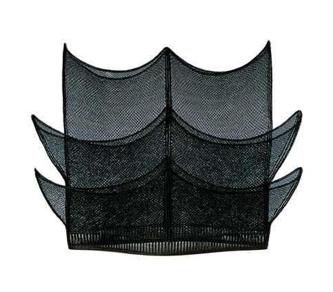

탕건장
남자들이 갓을 쓸 때 받쳐 쓰는 모자를 만드는 기술

제작과정
모짐놓기, 박죽넣기와 소넣기, 줄이어가기와 상지 만들기, 구갑과 나비단추 만들기의 순으로 진행되는 기본 제작 과정에서 가장 기술을 요하는 것은 말총을 알맞은 힘으로 당기고 맺는 힘의 안배이다. 외형이 완성되면 참먹을 진하게 갈아 바르고 햇볕에 말리는 묵염처리(墨染處理)로 마감한다.
사용재료
말총이나 쇠꼬리털로 만든다.
특징
1895년 단발령 이후 의관풍속이 크게 변모하면서 탕건의 수요기반이 해체되기 시작하였고, 탕건장도 점차 줄어들어 기술이 절연될 위기에 직면하였다. 현재는 제주도의 여성 몇 명에 의하여 겨우 전승되고 있다.
전승자
| 보유구분 | 이름 | 성별 | 기예능 | 지역 | 인정일 |
|---|---|---|---|---|---|
| 보유자 | 김혜정(金惠正) | 여 | 탕건 | 제주 | 2009-09-25 |
| 전승교육사 | 김경희(金慶姬) | 여 | 탕건 | 경기 | 1990-10-10 |
소재지
제주